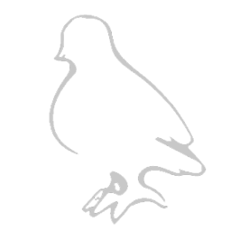

Orzmic
Un tout nouveau jeu de musique non commercial développé par BTworks, Orzmic a un gameplay polyvalent et chaque chanson a un tableau qui vous donnera une expérience de jeu unique. Orzmic inclura plus de vingt pistes de chansons de haute qualité de producteurs de musique nationaux et internationaux dans la première version, et d’autres pistes seront à venir dans les versions suivantes. Restez à l’écoute!
À propos
Ce jeu qui est aussi gratuit proposé par BTworks est un jeu de rhythme très similaire à Phigros. Elle est cependant plus dynamique et réactif que son concurent.
Gameplay
Le gameplay de Phigros consiste en différents types de notes descendant vers des lignes de jugement que le joueur doit frapper lorsque les notes les atteignent.
Il y 4 types de notes dans ce jeu :
- Tap : Appuyez sur lorsqu'ils atteignent la ligne de jugement
- Hold : Appuyez dessus lorsqu'ils atteignent la ligne de jugement, puis maintenez-les enfoncés jusqu'à ce qu'ils franchissent complètement la ligne
- Drag : Maintenez lorsqu'ils atteignent la ligne de jugument
- Flick : Glissez quand ils atteignent la ligne de jugement
Il peut y avoir plusieurs lignes de jugement et les notes peuvent approcher leurs lignes de jugement respectives de chaque côté (au-dessus ou au-dessous). Les lignes de jugement peuvent également pivoter, changer d'opacité et se déplacer sur le terrain de jeu.
Système de jugement
Lorsque vous frappez une note, le résultat sera l'un des trois jugements différents, Parfait, Bon ou Mauvais, selon la précision avec laquelle le coup a été chronométré, ou Manqué si la note n'a pas été frappée du tout. Chaque jugement attribuera une certaine précision.
| Jugement | Précision | Fenêtre de temps | Fenêtre de temps (en mode chalenge) |
|---|---|---|---|
| Perfect | 100% | ±80ms | ±40ms |
| Good | 65% | ±160ms | ±75ms |
| Bad | 0% | ±180ms | |
| Miss | 0% | N/A | N/A |
Les notes Drag and Flick sont incapables de donner des jugements bons ou mauvais, elles se traduiront donc toujours par Perfect ou Miss.
Aperçu du gameplay du jeu actuelle
Infos intérésantes sur le jeu
À chaque fin d'une chapitre, le jeu possède des chansons cachés qui sont comme des niveau Boss pour débloqer le chapitre suivant.
Liens utiles (liens externes)
 Site officielle du jeu Wiki du jeu
Wiki du jeu